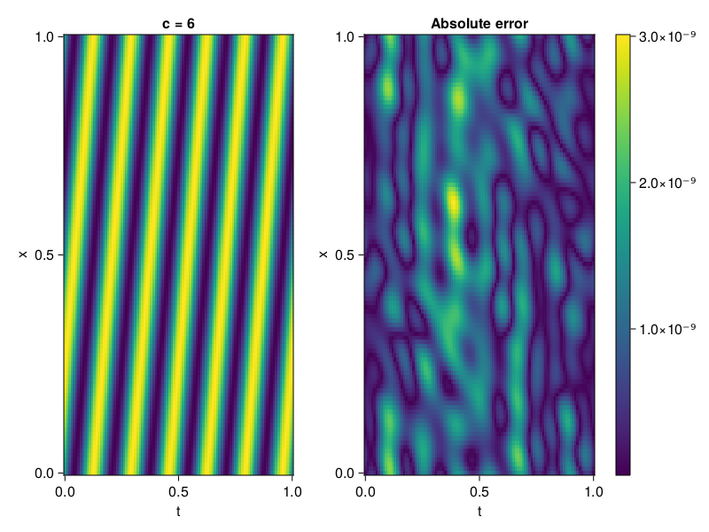

1D Convection Equation
Consider the following 1D-convection equation with periodic boundary conditions.
\[\begin{aligned} &\frac{\partial u}{\partial t}+c \frac{\partial u}{\partial x}=0, x \in[0,1], t \in[0,1] \\ &u(x, 0)=sin(2\pi x) \\ \end{aligned}\]
First we define the PDE.
using ModelingToolkit, Sophon, IntervalSets, CairoMakie
using Optimization, OptimizationOptimJL
@parameters x, t
@variables u(..)
Dₜ = Differential(t)
Dₓ = Differential(x)
c = 6
eq = Dₜ(u(x,t)) + c * Dₓ(u(x,t)) ~ 0
u_analytic(x,t) = sinpi(2*(x-c*t))
domains = [x ∈ 0..1, t ∈ 0..1]
bcs = [u(x,0) ~ u_analytic(x,0)]
@named convection = PDESystem(eq, bcs, domains, [x,t], [u(x,t)])\[ \begin{align} 6 \frac{\mathrm{d}}{\mathrm{d}x} u\left( x, t \right) + \frac{\mathrm{d}}{\mathrm{d}t} u\left( x, t \right) =& 0 \end{align} \]
Imposing periodic boundary conditions
We will use BACON to impose the boundary conditions. To this end, we simply set period to be one.
chain = BACON(2, 1, 8, 1; hidden_dims = 32, num_layers=4)MultiplicativeFilterNet(
filters = BranchLayer(
filter_1 = DiscreteFourierFeature(2 => 32), # 32 parameters, plus 64
filter_2 = DiscreteFourierFeature(2 => 32), # 32 parameters, plus 64
filter_3 = DiscreteFourierFeature(2 => 32), # 32 parameters, plus 64
filter_4 = DiscreteFourierFeature(2 => 32), # 32 parameters, plus 64
),
linear_layers = PairwiseFusion(
Base.Broadcast.BroadcastFunction{typeof(*)}(*)
layer_1 = Dense(32 => 32), # 1_056 parameters
layer_2 = Dense(32 => 32), # 1_056 parameters
layer_3 = Dense(32 => 32), # 1_056 parameters
),
output_layer = Dense(32 => 1), # 33 parameters
) # Total: 3_329 parameters,
# plus 256 states, summarysize 192 bytes.For demonstration purposes, the model is also periodic in time
sampler = QuasiRandomSampler(500, 100) # data points
strategy = NonAdaptiveTraining(1 , 500) # weights
pinn = PINN(chain)
prob = Sophon.discretize(convection, pinn, sampler, strategy)
@time res = Optimization.solve(prob, BFGS(); maxiters = 1000)u: ComponentVector{Float64}(filters = (filter_1 = (bias = [0.17686332706967345; -0.7291202892479272; … ; 0.518143190775942; -0.47261711050132627;;]), filter_2 = (bias = [-0.4120762692300566; -1.2515556888976376; … ; -0.07416889030051013; -0.517122609479669;;]), filter_3 = (bias = [-0.5197835525946823; 0.8264324560850291; … ; -0.1056902315906772; 0.18630375326808046;;]), filter_4 = (bias = [-0.061084936338927545; -0.6064491654917133; … ; 0.37247079730385757; 0.029399868066665967;;])), linear_layers = (layer_1 = (weight = [-0.13690979809779763 -0.12807110083550977 … -0.3587031889420114 0.22470259841948914; 0.10970220800417557 -0.047437773032446943 … -0.09083190559848717 -0.4334860084505733; … ; -0.14179765236154707 0.18611700749742582 … -0.16642427406893323 0.14614912068375624; 0.05559606521892976 -0.2775829388832732 … 0.025318872786914977 -0.09459780821204096], bias = [0.008550409291801947; 0.025934546848914063; … ; -0.14835720817253162; -0.046420789515949246;;]), layer_2 = (weight = [-0.0884189774016538 0.5539047953267306 … 0.45719785743529734 0.5200687781144714; -0.10345565156635807 0.31299454141285604 … 0.053851314297204786 -0.0868262628883302; … ; -0.30897760438408006 -0.27827390176710104 … -0.6256320859081136 -0.10362828481629122; -0.06714544330209532 -0.17293932433465212 … -0.5386536593857003 0.20249423534064756], bias = [-0.06248933691147369; -0.003021733529897384; … ; 0.13347532311676794; 0.003846794802815486;;]), layer_3 = (weight = [0.08104449126072949 -0.010194796054732983 … -0.098745980252491 0.29327834469391134; 0.3253058278148711 -0.2856268290446906 … 0.2741695316680494 0.3247003867097783; … ; -0.43360657735539304 0.042961390964574776 … 0.5339982465059252 -0.22746386768477; 0.18011475065859647 -0.25282361533315767 … 0.40992201953403484 -0.17496912929522773], bias = [0.018897739003218506; -0.04056406103911438; … ; 0.009028798227874902; 0.012261741550480255;;])), output_layer = (weight = [0.11684033976256313 -0.01548717135097296 … -0.10250705401247281 0.36448353648109005], bias = [0.015365407121698973;;]))Let's visualize the result.
phi = pinn.phi
xs, ts= [infimum(d.domain):0.01:supremum(d.domain) for d in domains]
u_pred = [sum(phi([x,t],res.u)) for x in xs, t in ts]
u_real = u_analytic.(xs,ts')
fig, ax, hm = heatmap(ts, xs, u_pred', axis=(xlabel="t", ylabel="x", title="c = $c"))
ax2, hm2 = heatmap(fig[1,end+1], ts,xs, abs.(u_pred' .- u_real'), axis = (xlabel="t", ylabel="x", title="Absolute error"))
Colorbar(fig[:, end+1], hm2)
display(fig)
We can verify that our model is indeed, periodic.
xs, ts= [infimum(d.domain):0.01:supremum(d.domain)*2 for d in domains]
u_pred = [sum(phi([x,t],res.u)) for x in xs, t in ts]
fig, ax, hm = heatmap(ts, xs, u_pred', axis=(xlabel="t", ylabel="x", title="c = $c"))
display(fig)